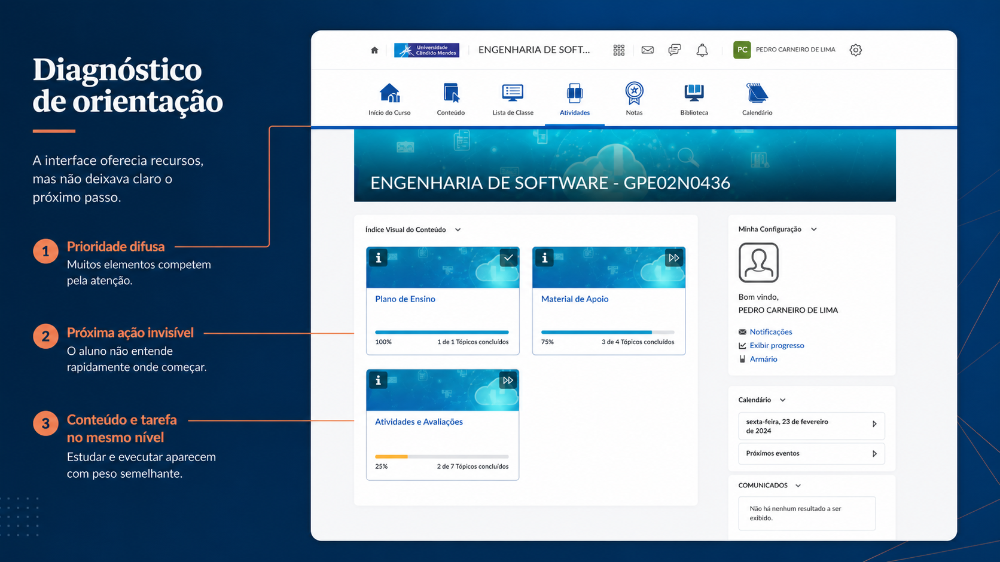
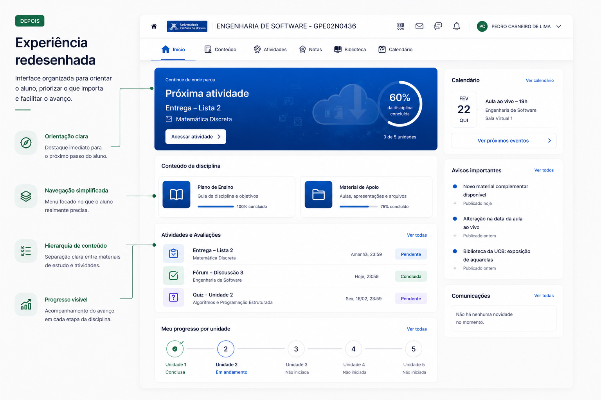

Alunos tinham dificuldade de saber o que fazer primeiro.
← Voltar para disciplinas
Resumo executivo
Problema
Decisão
Resultado esperado
Matriz de satisfação
Escuta qualitativa
Análise da jornada
Diagnóstico visual
Menos ambiguidade
Próxima ação clara
Menor carga cognitiva
Navegação mais direta
Progresso compreensível
Mais consistência visual
Reflexão final
Redesigndo AVA UCB
Como redesenhei uma sala de aula virtual no Brightspace para ajudar o aluno a entender onde começar, o que priorizar e como avançar com menos esforço.
UX Research
Arquitetura da Informação
UI Design
Design Instrucional
Educação Digital
Brightspace / D2L
Visão geral do projeto
O AVA da UCB reunia conteúdos, atividades, avisos e acompanhamento acadêmico. O problema era que, ao entrar na disciplina, o aluno precisava interpretar sozinho o que fazer primeiro.
A partir da análise da jornada de acesso, da matriz de satisfação dos usuários e do diagnóstico visual da sala de aula, identifiquei que o problema não era falta de funcionalidade, mas falta de orientação, hierarquia e consistência visual.
A proposta reorganiza a experiência da sala de aula para destacar a próxima ação, separar melhor conteúdo e tarefas, melhorar a leitura do progresso e aplicar uma linguagem visual mais consistente dentro das limitações do Brightspace.
Problema: falta de orientação
Abordagem: pesquisa + arquitetura da informação
Restrição: Brightspace / D2L
Solução: próxima ação em destaque
Resultado: mais clareza e autonomia
Reorganizar a sala em torno da próxima ação.
Menos ambiguidade e menor carga cognitiva.
Guia de leitura
Como ler este case
Este case mostra como reduzi a desorientação do aluno em uma sala virtual, reorganizando a jornada em torno da próxima ação.
- 01 Onde o aluno se perdia
- 02 Como o problema aparecia na jornada
- 03 Quais decisões guiaram o redesign
- 04 Como a solução reorganiza prioridade, tarefa e progresso
Contexto e problema
Contexto e problema
O desafio era melhorar a orientação do aluno dentro de uma plataforma que funcionava tecnicamente, mas exigia interpretação constante para entender caminhos, prioridades e próximas ações.
Sistema
O AVA concentrava conteúdos, atividades, calendário, comunicados e acompanhamento de aprendizagem.
Desorientação
O aluno precisava interpretar caminhos, prioridades e próxima ação a cada etapa.
Múltiplos caminhos
Baixa hierarquia
Ícones pouco claros
Ação principal difusa
Restrição
O redesign precisava respeitar os limites do Brightspace/D2L, atuando principalmente em hierarquia, organização e clareza visual.
A solução precisava orientar melhor sem reconstruir a plataforma.
Pesquisa e evidências
O diagnóstico combinou escuta de usuários, análise da experiência e leitura dos pontos de dificuldade do AVA.
A investigação analisou percepções de usuários sobre acesso, navegação, comunicação, aprendizagem, acessibilidade e satisfação geral com o AVA. O objetivo foi entender por que a plataforma funcionava como sistema, mas falhava como orientação para o aluno.
Formato da investigação
A investigação combinou análise qualitativa exploratória com usuários e pessoas envolvidas no uso do AVA, matriz de satisfação, análise heurística da interface e leitura dos fluxos principais da jornada do aluno.
Análise de percepções sobre navegação, layout, comunicação, aprendizagem e acessibilidade.
Feedbacks de alunos, professores, tutores e equipe envolvida na operação do AVA.
Leitura do percurso real: login, recepção do AVA, escolha da disciplina e entrada na sala.
Avaliação da interface para identificar competição visual, redundância e ausência de prioridade.
O que a pesquisa revelou
Navegação confusa
Usuários relatavam dificuldade por interface sobrecarregada, antiga e com muitos cliques.
ImplicaçãoSimplificar caminhos e reforçar a ação principal.
Ícones pouco intuitivos
Ícones eram percebidos como genéricos, redundantes ou difíceis de diferenciar.
ImplicaçãoCriar iconografia mais consistente e reconhecível.
Comunicação pouco destacada
Alertas e calendário precisavam ser mais claros e visualmente relevantes.
ImplicaçãoReorganizar avisos e eventos por prioridade.
Sensação de desorientação
Usuários se sentiam perdidos ou desmotivados pela complexidade da plataforma.
ImplicaçãoTransformar a sala de aula em ponto de reorientação.
Acessibilidade e dispositivos
Havia preferência por telas maiores devido à má experiência em dispositivos móveis e dificuldades com recursos de acessibilidade.
ImplicaçãoPriorizar clareza visual, contraste, legibilidade e organização responsiva.
Evidência visual
A interface mostrava um problema de orientação, não de quantidade.
A análise visual da sala de aula revelou que os elementos principais competiam pela atenção. A interface oferecia recursos, mas não deixava evidente o caminho mais importante para o aluno seguir.
Clique para ampliar o diagnóstico

Artefato de diagnóstico construído a partir da interface real do AVA,
destacando problemas de orientação, hierarquia, redundância e separação entre conteúdo e ação.
Insight central
A dificuldade começava antes da sala de aula.
O aluno passava pelo login, pela página inicial do AVA e pela escolha da disciplina. Quando finalmente entrava na sala, ainda precisava descobrir o contexto, a prioridade e a próxima tarefa.
Por isso, a sala de aula precisava funcionar como um ponto de reorientação, não apenas como uma página de conteúdo.
Jornada observada
Diagnóstico da jornada até a sala
A dificuldade não começava no conteúdo. Começava antes, no caminho que o aluno precisava interpretar para chegar até ele.
01
Login
O aluno escolhe entre Microsoft e Acesso Direto sem entender claramente a diferença entre os caminhos.
- Problema
- Escolha inicial sem orientação
- Consequência
- Dúvida antes mesmo de entrar no AVA
- Necessidade
- Explicar o caminho recomendado
02
Recepção do AVA
Após o login, o aluno encontra disciplinas, calendário, avisos e informações institucionais competindo pela atenção.
- Problema
- Muitos sinais simultâneos
- Consequência
- O aluno ainda precisa interpretar onde deve ir
- Necessidade
- Priorizar disciplina e próxima ação
03
Sala de aula
Ao entrar na disciplina, conteúdos, atividades, progresso e configurações aparecem com pesos parecidos.
- Problema
- Prioridade difusa
- Consequência
- O aluno não entende rapidamente por onde começar
- Necessidade
- Destacar próxima ação, tarefas e progresso
Insight central
O problema não era falta de recurso. Era excesso de interpretação entre uma etapa e outra.
Diagnóstico → redesign
Do diagnóstico ao redesign
O redesign não foi guiado por estética, mas pela necessidade de reduzir o esforço acumulado ao longo da jornada de acesso.
Cada decisão buscou tornar a entrada na disciplina mais clara, direta e orientada à ação.
01
Diagnóstico
Sem orientação clara
Achado
Não havia próxima ação evidente.
Decisão
Criar entrada orientada à atividade.
Reflexo na solução
O aluno entende por onde começar.
02
Diagnóstico
Navegação redundante
Achado
A mesma ação aparecia em mais de um ponto.
Decisão
Reduzir caminhos concorrentes.
Reflexo na solução
A navegação fica mais previsível.
03
Diagnóstico
Baixa hierarquia visual
Achado
Conteúdos, avisos, tarefas e progresso tinham pesos parecidos.
Decisão
Separar níveis de prioridade.
Reflexo na solução
O aluno distingue principal, apoio e informação.
04
Diagnóstico
Conteúdo e ação misturados
Achado
Estudo e tarefa apareciam sem distinção suficiente.
Decisão
Separar áreas de conteúdo, atividade e aviso.
Reflexo na solução
O aluno entende quando estudar, entregar ou consultar.
05
Diagnóstico
Progresso pouco acionável
Achado
O progresso informava, mas não orientava.
Decisão
Vincular progresso à próxima ação.
Reflexo na solução
O avanço passa a sugerir continuidade.
Síntese da decisão
Cada ajuste visual precisava responder a uma dificuldade observada: orientar primeiro, organizar depois e só então permitir exploração.
Sistema visual aplicado
O redesign também precisava tornar a plataforma mais reconhecível e consistente.
Como a estrutura base do Brightspace tinha restrições, parte do impacto veio da criação de uma linguagem visual mais clara para ícones, cores, banners e identificação das modalidades.
Nova iconografia
Substituição de ícones inconsistentes por um sistema visual mais coeso, reconhecível e alinhado às funções do AVA.
Paleta por modalidade
Cores organizadas por modalidade de ensino para facilitar identificação, diferenciação e consistência visual.
Identidade aplicada
Banners, cores e elementos visuais foram ajustados para renovar a percepção da plataforma sem alterar sua estrutura base.
Acessibilidade visual
Decisões de contraste, legibilidade e clareza foram consideradas para reduzir esforço de leitura e melhorar reconhecimento.
Solução visual
Uma experiência orientada à ação.
A proposta reorganiza a sala de aula para deixar claro o que fazer primeiro, separar contextos e tornar o progresso mais compreensível.
Clique para ampliar

Proposta de redesign baseada nos achados da
pesquisa, priorizando orientação, clareza e redução de esforço de interpretação.
Próxima ação em destaque
A entrada da disciplina passa a orientar o aluno sobre o que fazer agora.
Conteúdo separado de tarefas
Materiais de estudo e atividades deixam de competir pelo mesmo espaço.
Progresso mais compreensível
O acompanhamento passa a apoiar decisão, não apenas mostrar porcentagem.
Menos competição visual
Blocos com papéis claros reduzem ambiguidade e esforço de interpretação.
Proposta conceitual de redesign criada a partir do diagnóstico da experiência
atual, respeitando limitações esperadas de um ambiente AVA/LMS.
Impacto esperado
Menos interpretação. Mais segurança para continuar.
Como a mensuração final ainda não estava consolidada, o impacto foi descrito como resultado esperado: reduzir ambiguidade, destacar a ação principal e tornar a navegação mais previsível para o aluno.
O aluno entende onde começar sem precisar explorar todo o sistema.
A ação prioritária aparece logo na entrada da disciplina.
A interface reduz o esforço necessário para interpretar conteúdo, tarefas e avisos.
Caminhos mais previsíveis diminuem cliques desnecessários.
O acompanhamento passa a apoiar a tomada de decisão do aluno.
Ícones, cores e áreas da interface ganham linguagem mais coerente.
No AVA, clareza não era acabamento visual. Era o que ajudava o aluno a continuar.
Este projeto não foi sobre reorganizar uma interface. Foi sobre transformar uma experiência fragmentada em um fluxo mais contínuo de entendimento.
A sala de aula deixou de ser apenas um destino dentro do AVA e passou a atuar como um ponto de reorientação da jornada do aluno.
Dentro das restrições do Brightspace, a solução mostrou que hierarquia, consistência visual e arquitetura da informação podem gerar mais clareza mesmo sem alterar profundamente a estrutura da plataforma.